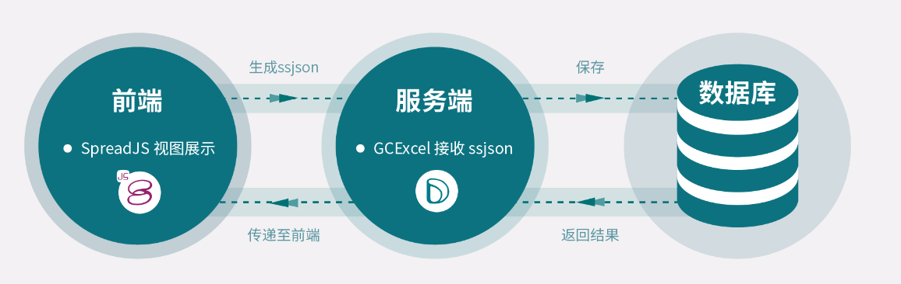
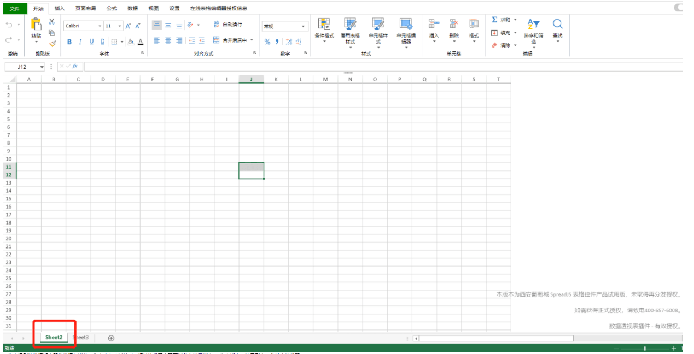
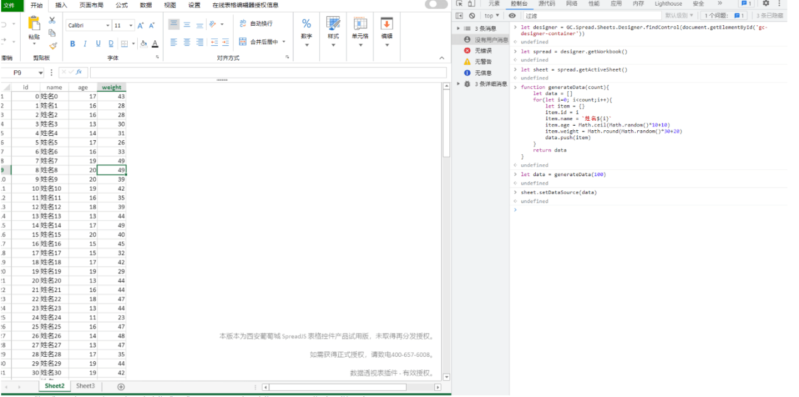
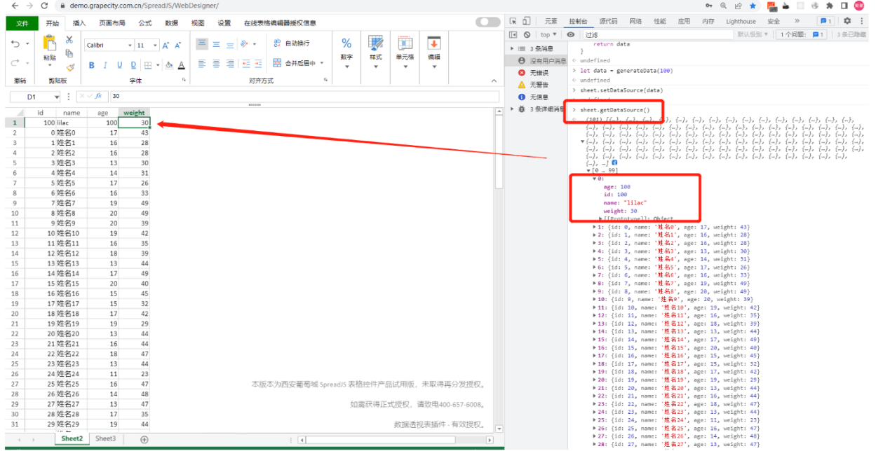
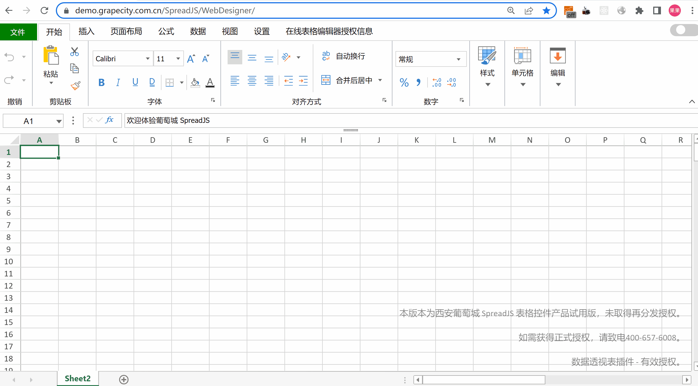
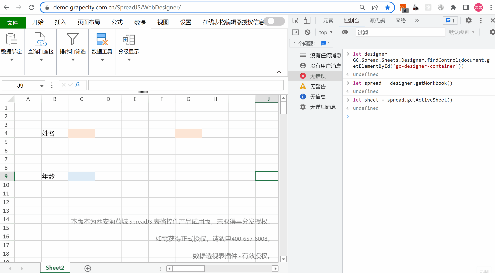

在公司的日常业务中，存在不少数据的收集提取需求，大部分公司会采取Excel来完成数据的收集和汇总，但这项工作会让负责信息收集的业务人员相当头大。虽然提前做好了数据收集模板，但最终提交上来的模板会被修改的五花八门，信息填写错误率比较高，无法实现信息填写不完整不允许提交的约束。后期的数据汇总虽然可以采用手动的复制粘贴来实现，但如果想要把这些数据做结构化存储，又需要去研发人员去开发一套解析Excel文档的功能，将这些填报数据提取入库，整个流程比较繁琐且出错率较高。
Origin: https://www.grapecity.com.cn/blogs/spreadjs-how-to-use-data-binding-to-get-data-sources-in-filling
如果从最开始将这套数据收集的业务完全做在Web端，整体的数据收集任务下发、填报、数据汇总、数据提取完全自动化，这将会大大的提高业务人员的工作效率。本文会带大家使用纯前端表格控件SpreadJS解决这个问题。我们不再需要本地安装Office相关的服务，只要具备一个满足H5标准的浏览器，即可在Web端完成之前需要在本地Excel中完成的一系列操作，我们也可以在官方部署的体验地址上对SpreadJS进行在线体验。
数据收集逻辑
结合SpreadJS和前后端交互逻辑，即可完成一个数据收集的功能，如果对源码内容感兴趣可以查看我之前的博客：指标补录Demo
在该实例中，使用SpreadJS中的数据绑定设计了数据收集模板与汇总模板；之后开发了数据收据模板下发的功能，将数据收集模板推送给需要填报的相关人员。
对应人员填报后，可以使用SpreadJS中数据绑定获取数据的相关API，获取填写数据。
最终再借助数据绑定，将汇总数据使用数据绑定设置在汇总模板中。通过如上几步，客户的填报数据在提交时，就可以以结构化数据存储在数据库中，汇总时只需要从数据库中查询再设置到汇总模板即可。SpreadJS同时内置了多种数据验证，在数据提交时，结合数据验证，可以在模板中包含异常数据时将请求驳回，建立一套严谨便捷的数据提交汇总流程。

项目实战
接下来我们可以一起探索SpreadJS中数据绑定的功能究竟该如何使用。
如果不了解如何在Web端项目集成SpreadJS，可以参考文章：
SpreadJS内部支持了三种数据绑定方式，分别是工作表绑定、单元格绑定与表格绑定。
工作表绑定
通常一个Excel文件会包含多张工作表，如下所示，Sheet2与Sheet3分别代表的就是一张工作表：

工作表级别的数据绑定即将数据与当前工作表建立映射关系，相关的代码实现可以参考学习指南-工作表绑定，这里列出一些核心的代码：
1
2
3
4
5
6
7
8
9
10
11
12
13
14
15
16
17
18
19
20
21let designer = new GC.Spread.Sheets.Designer.Designer("designer-container")
// 获取designer关联的Spread对象
let spread = designer.getWorkbook()
// 获取当前活动的sheet
let sheet = spread.getActiveSheet()
// 模拟绑定数据，表单绑定数据源是一个json数组
function generateData(count){
let data = []
for(let i = 0; i < count; i ++){
let item = {}
item.id = i
item.name = `姓名${i}`
item.age = Math.ceil(Math.random()\*10+10)
item.weight = Math.round(Math.random()\*30+20)
data.push(item)
}
return data
}
let data = generateData(100)
// 设置当前工作表的数据源
sheet.setDataSource(data)执行完成绑定逻辑之后，工作表展示如下：

接下来我们可以在工作表中进行一些删除行，新增行，修改数据的操作，操作完成之后，调用获取绑定数据的API，即可获取当前修改之后的绑定数据：

详细的demo演示，可以点击这里参考实现。
单元格绑定
单元格绑定见名思意，即将单元格与某一个字段key建立映射，用户填写的数据可以反应在这个key值对用的value中，单元格绑定代码的实现方式可以参考学习指南-单元格绑定，本文演示如何借助设计器实现数据绑定。首先，借助设计器，完成一个数据绑定模板的设计，可以参考如下动画：

通过简单的拖动，即可完成key值与单元格之间的映射建立，接下来，就可以构造一些默认数据，设置默认的绑定数据。绑定完成之后，可以修改绑定数据，修改完成之后，通过SpreadJS数据绑定获取数据源的API，即可拿到修改之后的数值。这里其实就是一个填报场景的体现，例如，当前需要收集人员信息表，每一位员工在填写完成之后，点击提交时，就可以拿到员工信息的一个json数据，之后前端就可以将这些数据发送给服务端，让服务端去做存储了。

SpreadJS中，支持将当前文件导出成一个他们自己能识别的json，模板文件可以以json形式存储，下次访问文件时，只需要执行Spread.fromJSON(fileJson)，就可以实现模板文件的保存与加在显示了，关于表单绑定完整的Demo演示可以点击这里，参考详细的实现代码。
表格绑定
很多不熟悉Excel的用户，会直接把一个Excel工作簿或者一个工作表称为一个表格，但其实这样的是不正确的。Excel中表格具有特殊的含义，这一点在SpreadJS中也是一致的。SpreadJS中表格绑定的代码实现可以参考学习指南-表格绑定。在客户的实际业务中，表格绑定和单元格绑定往往会同时发生，接下来会演示借助SpreadJS在线表格编辑器（设计器）如何实现一个这样的模板设计：

(done)